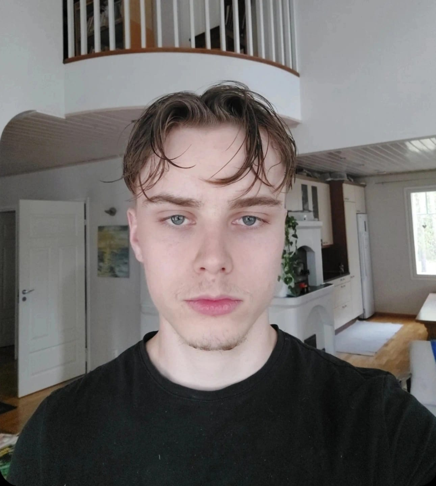
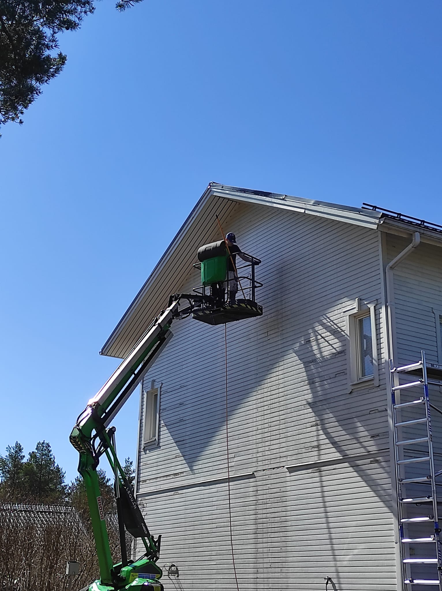
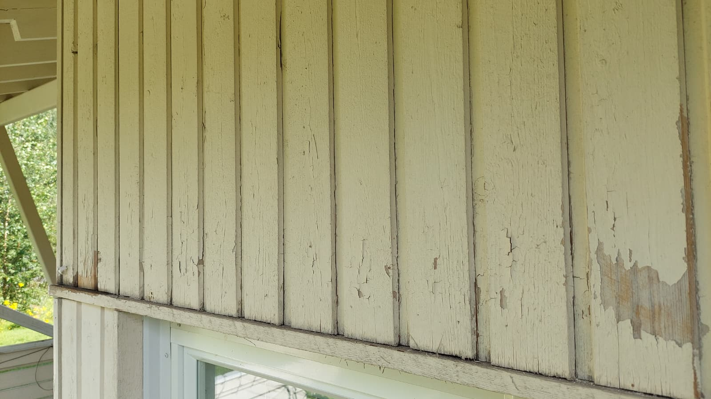
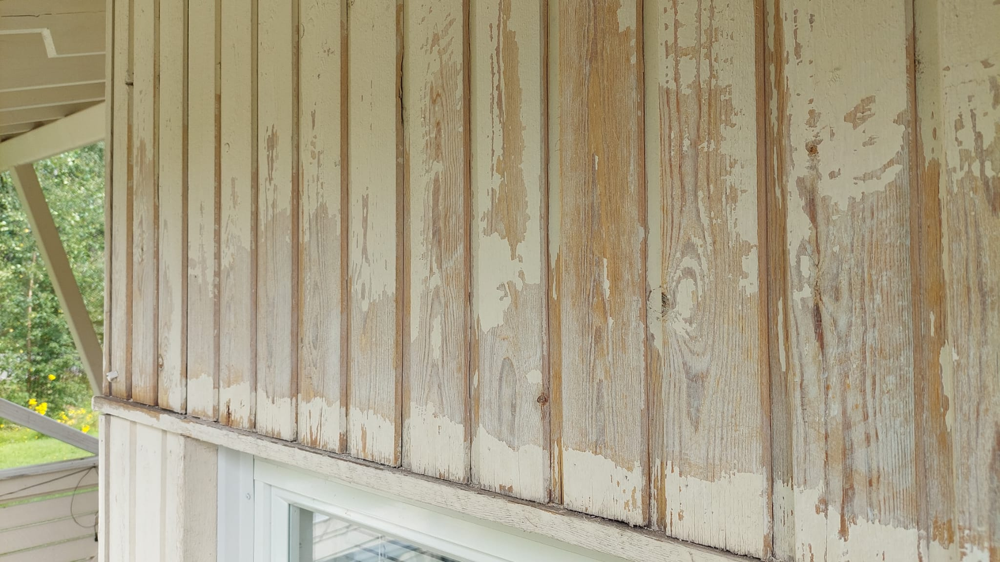
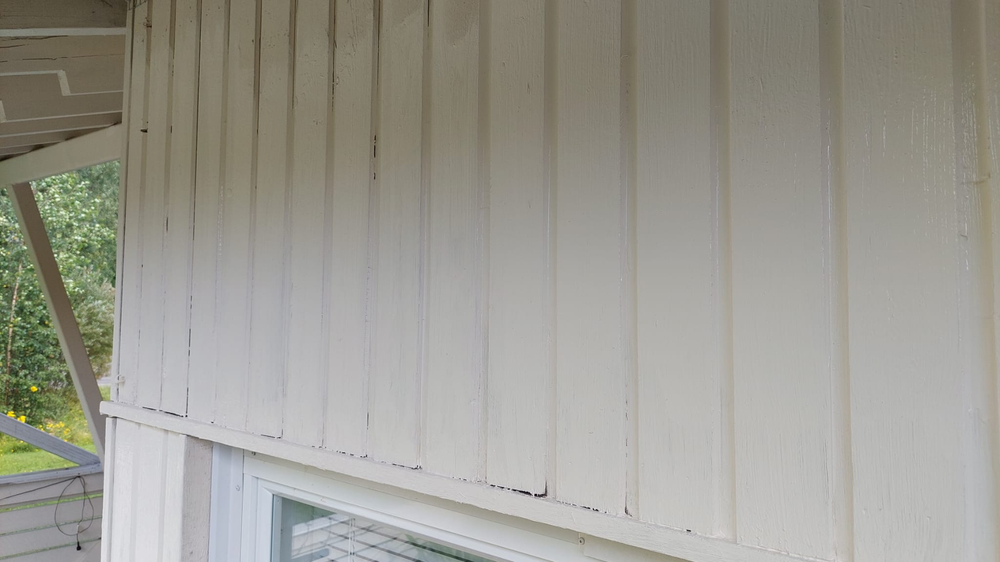
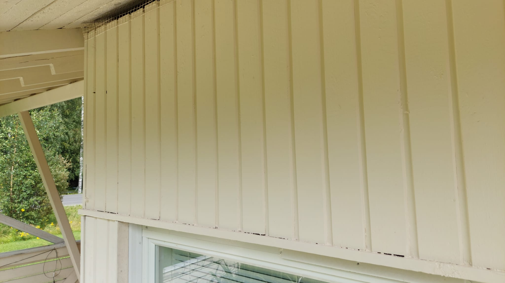

Tiimimme

Juho Soronen
Vastuuhenkilö
Kuuden vuoden kokemus ulkomaalauksesta.

Maria Soronen
Tarkempi tekninen osaaminen
Ymmärtää betonia, rautaa ja puuta. Maalaamassa jo viisi vuotta.
Luotettava kumppani rakennuksesi pintakäsittelyyn Oulun seudulla
Pyydä TarjousToteutamme omakotitalojen, taloyhtiöiden ja muiden rakennusten ulkomaalauksia Oulun seudulla. Kevyen toimintamallimme ansiosta kustannuksemme eivät muodostu raskaasta toimitila- ja hallintorakenteesta. Eli meidän palvelutyylinen liikemuoto mahdollistaa itse työn huolelliseen toteuttamiseen. Tarjotaan kilpailukykyinen kokonaisuus tinkimättä työn laadusta, työturvallisuudesta tai asianmukaisesta hallinnosta.
Ulkomaalaus on investointi, jonka pitää kestää aikaa ja vaihtelevia sääolosuhteita. Pyrimme toteuttamaan työmaat järjestelmällisesti ja suunnitelmallisesti. "Hyvin suunniteltu on jo puoleksi tehty- tyyli" ajaa meitä arvioimaan jokaisen kohteen tarkasti ja antamaan mahdollisimman tasapainoisen tarjouksen.
Tärkein markkinointikeinomme on tyytyväisen asiakkaan suositus. Siksi panostamme myös palvelualttiuteen ja pyrimme suoriutumaan kaikilla osa-aloilla erinomaisesti.

Vastuuhenkilö
Kuuden vuoden kokemus ulkomaalauksesta.
Tarkempi tekninen osaaminen
Ymmärtää betonia, rautaa ja puuta. Maalaamassa jo viisi vuotta.

Seinän öljymaalausta katolla

Taloyhtiön puuaidan huoltomaalaus

Henkilönostimen käyttö vaikeapääsyisessä kohteessa




Kiiminkijoentie 718
90910 Oulu, Suomi
Y-tunnus 3300358-2
Ma–Pe: 08:00–19:00
La: 10:00–14:00
Su: Suljettu
Pyydä maksuton tarjous sähköpostitse. Vähimmäistiedoiksi tarvimme vain paikan ja ajan, lyhyt esittely kohteesta auttaa! (: